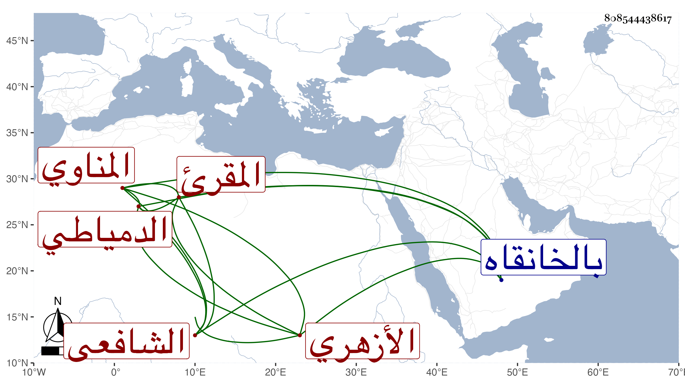

0902Sakhawi.DawLamic.ITO20230111-ara1.EIS1600.808544438617
Biography ID: 808544438617
786
محمد بن قاسم واختلف فيمن بعده فقيل حسين وقيل محمد بن حسين الشمس أبو عبد الله المناوي الأصل الدمياطي ثم الأزهري الشافعي المقرئ ويعرف بالطبناوي لكون ناصر الدين الطبناوي كان زوج أخته . نشأ فحفظ القرآن وكتبا كالشاطبيتين ومقدمة في التجويد لابن الجزري وعمدة المجيد في علم التجويد للسخاوي وقرأ الأوليتين على عبد الدائم الأزهري وبحث عليه شرحه للثالث وتلا بالسبع على الزين رضوان وجعفر وغيرهما كالشهاب الزواوي والشمس البكري بن العطار وعنه أخذ النحو والفقه وغيرهما ، وبرع في الحساب والقراآت وغيرهما وشارك في الفقه والعربية وانتفع به جماعة في القراآت واختص بصحبة محمد الكويس ثم كان بعد موته يتعاهد قبره ماشيا في الغالب ويديم التلاوة ذهابا وإيابا وعند قبره وبلغني ان الشيخ كان يقول من أراد النظر إلى من قرع الإيمان قلبه فلينظر إلى هذا . وكان كثير التهجد والتلاوة والصيام واتباع السنة واتباع السلف . مات كهلا بالخانقاه بعد الستين ودفن تحت شباك قبر شيخه رحمه الله وإيانا .
